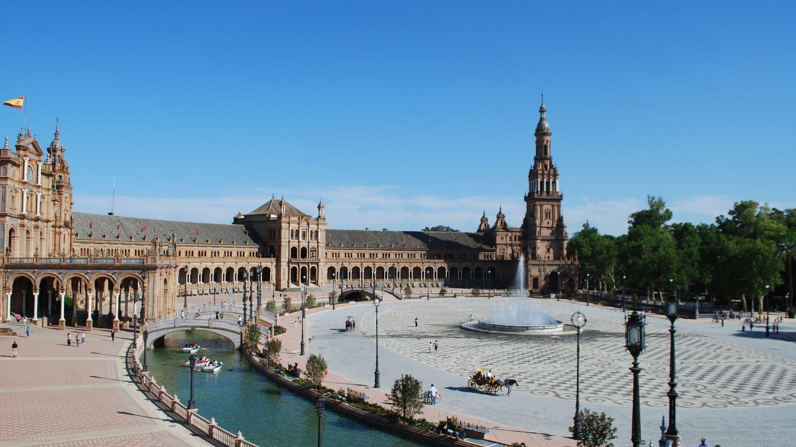

세비야는 스페인 남서부 안달루시아 지방에 위치한 대도시다.
세빌리아라고도 불리고 스페인에서 마드리드 - 바르셀로나 - 발렌시아 다음으로 큰 도시다.
스페인의 명물인 플라멩코와 투우 하면 떠오르게 되는 도시기도 하고 레콘키스타 이후 이슬람 모스크를 개조해 만든 세비야 대성당, 그리고 과거 이슬람 왕조 시절의 정원 문화를 맛볼 수 있는 알카사르 궁전, 스페인 광장 등이 유명하다.콜럼버스의 항해가 시작된 곳으로 유명하고 콜럼버스의 묘도
이곳에 있다. 과거에는 배들도 작았고 세비야를 가로지르는 과달키비르 강이 수심이 깊고 유량도 많아 항구로서 기능해서 스페인 제국의 대표적인 무역 도시이자 신대륙 교역의 첫 관문으로서 영화를 누렸지만 수위가 낮아지고 배는 커진 지금은 내륙 도시에 가까워졌다. 이렇게 세비야의 무역항 기능
이 자연 환경의 변화에 따라서 사라지면서 대신 카디스와 말라가 같은 도시들이 새로운 항구로 부상했다.